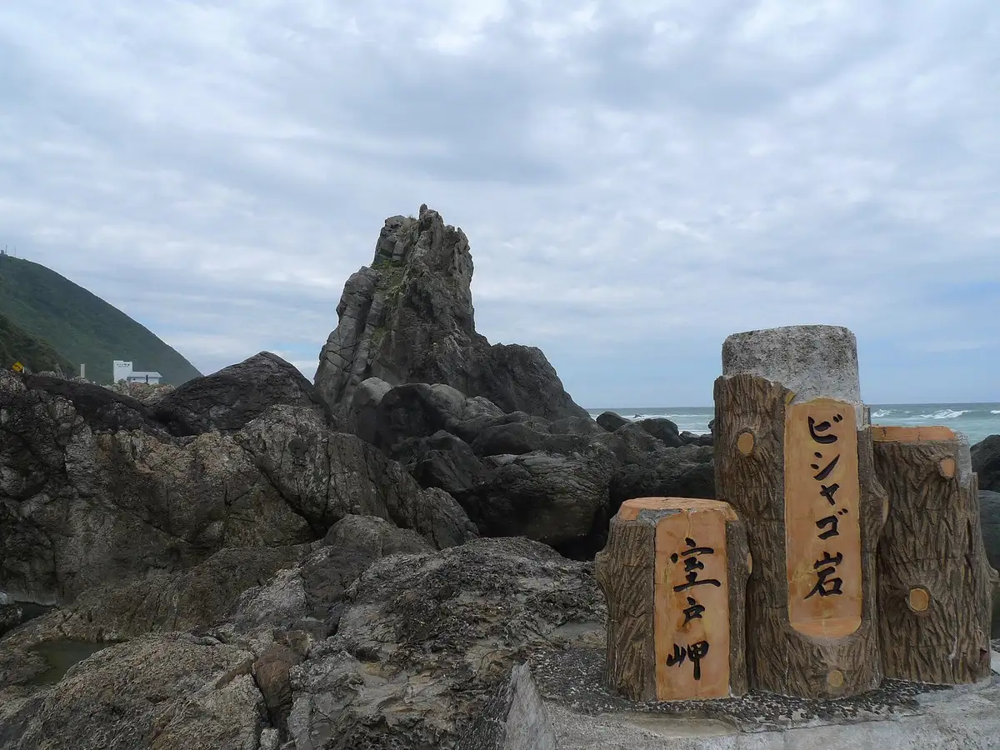
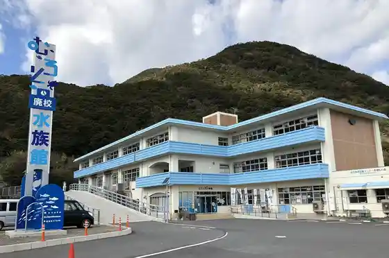
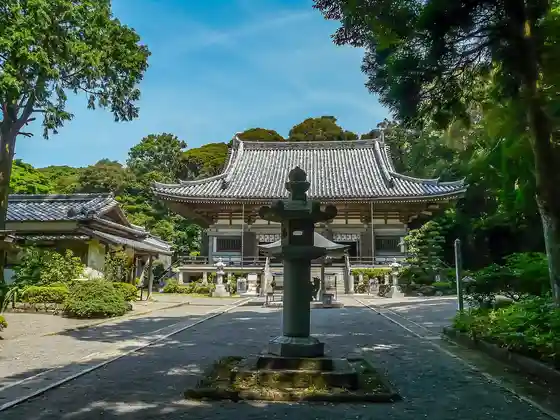
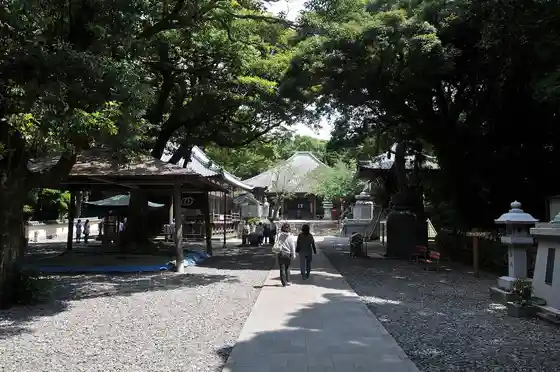

Muroto
Muroto · Kochi
Muroto
Highlighted on the Kochi map.

Stay
Sukai Ando Shii Muroto
Minshuku Muroto So
Hotel Fuji
Misaki Kanko Hotel
Famiriirojji Hatago Ya Muroto Mise
Ko Minka no Yado Kura Kukan Kura Yado
Tosa Bincho Sumi no Yado (Yado Gen)
Dining
SADAMARU BURGER
Yakitori Tei
Shitsu Kaze
Henro no Eki Fufu Yoshiya
Ikkyu
O Kura Manju
Yu Shoku Tei
Jiokafe Jioshoppu
Doraibuin Ohara
None Manjiu Fukuda Ya Muroto Mise
Izakaya Sentaro
Baikingu Yoshioka
COCO Muroto Misaki no Sentan Desu
Ryotei Kagetsu
Kira Kawazakana Tokoro Gen
Shittoroto
Experience
Muroto Sekai Jio Park Center
Sights
Muroto Misaki
Muroto Misaki Lighthouse
Muroto Haiko Aquarium

Kongo Itadaki Tera

Sai Misaki Tera

Mikuriya Nin Kutsu